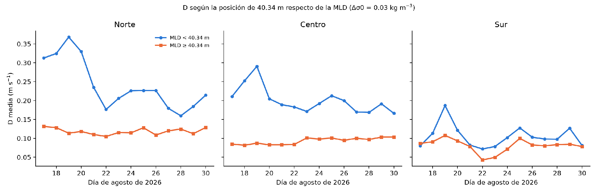

Documentos del trabajo
Leer el artículo y la presentación
- Descargar artículo completo (Word, DOCX · 2,19 MB)
- Descargar presentación (PowerPoint, PPTX · 1,18 MB)
Archivos originales del autor, con metodología, resultados, figuras y referencias. Las cifras de esta página proceden de esos documentos; no se recalcularon los datos originales para preparar el portafolio.
01 / Pregunta de investigación
¿Se mueve igual el océano en superficie y a 40 m?
El trabajo analiza cómo se relacionó el esfuerzo del viento con la diferencia entre las corrientes de superficie y de 40 m dentro de la Zona Económica Exclusiva (ZEE) peruana durante 14 días. Considera también la capa de mezcla, la circulación geostrófica y las señales costeras del nivel del mar.
Los niveles exactos del modelo son 0,494 m y 40,344 m. «40 m» es una forma abreviada de nombrar el segundo nivel; no representa una frontera física fija en el océano.
02 / Datos y metodología
Comparar dos niveles de la columna de agua
- Reunir los datos. Corrientes, temperatura, salinidad y nivel del mar del sistema de análisis y pronóstico de Copernicus Marine, con resolución de 1/12°. Esfuerzo del viento horario con resolución de 0,125°.
- Delimitar y preparar. Reconstrucción geométrica aproximada de la ZEE, dividida en norte, centro y sur. Se analizaron 10 194 celdas oceánicas con datos en ambos niveles y se ponderaron los promedios espaciales por el coseno de la latitud.
- Medir la diferencia. Se calculó por celda y día la magnitud de la diferencia vectorial entre las dos corrientes, denominada D, antes de promediarla en el espacio.
- Examinar posibles mecanismos. Se estimó la profundidad de la capa de mezcla mediante un umbral de densidad y la componente geostrófica a partir del nivel del mar. También se exploraron señales costeras propagantes.
- Evaluar la robustez. Se consideró la dependencia entre días consecutivos mediante tamaño efectivo de muestra, pruebas de Ebisuzaki, bootstrap por bloques y análisis de sensibilidad.
Qué mide D: cuánto difieren las corrientes en rapidez y dirección, en m/s. Dos corrientes igual de rápidas pero orientadas en sentidos opuestos tienen una diferencia grande. D no mide por sí sola el efecto del viento ni la respuesta a 40 m.
03 / Resultados del trabajo
El viento acompañó a la diferenciación vertical
| Comparación | r |
|---|---|
| Esfuerzo del viento y diferencia D, conjunto de la ZEE | 0,917 |
| Esfuerzo del viento y rapidez a 40,34 m, mismo día | 0,12 |
| Esfuerzo del viento y D, capa de mezcla menor de 40,34 m | 0,97 |
| Esfuerzo del viento y D, capa de mezcla de al menos 40,34 m | 0,15 |
La asociación entre viento y D se mantuvo en las pruebas de robustez descritas en el artículo. Sin embargo, la asociación con la rapidez superficial total dependió del evento de viento intenso y no resultó robusta.
La diferencia entre niveles fue aproximadamente el doble donde la capa de mezcla era más somera. Ese contraste también coincidió con diferencias de distancia a la costa y de rapidez de las corrientes, por lo que no permite aislar un efecto causal de la capa de mezcla.

El residuo superficial no geostrófico se relacionó estrechamente con D (r = 0,97) y se orientó predominantemente a la izquierda del viento. Es compatible con una respuesta superficial asociada al viento, pero el residuo también incluye otros procesos y errores de estimación.
La relación viento–D fue más fuerte en el norte y el sur que en el centro, sin demostrar estadísticamente una diferencia entre sectores. La evidencia de ondas atrapadas a la costa fue ambigua: no se identificó una velocidad de propagación coherente.
04 / Alcance y limitaciones
Una asociación dentro de una ventana de 14 días
Las corrientes proceden de un modelo con asimilación de datos, no de mediciones directas. El producto oceánico y el de viento comparten forzamiento atmosférico de ECMWF; por tanto, no son fuentes independientes para demostrar la relación física.
- La ventana incluye un único evento de viento intenso y no permite generalizar a otras estaciones o años. El tamaño efectivo estimado fue de aproximadamente 7,3 días.
- No hubo validación independiente mediante perfiladores de corriente, derivadores o perfiles in situ en toda la ZEE.
- La máscara de la ZEE es una aproximación geométrica, no el polígono oficial. Excluye las zonas sin datos a 40 m y la franja entre 20,0°S y 20,21°S.
- No se cuantificaron los remolinos ni las oscilaciones inerciales, y no se evaluó el efecto directo de las señales costeras sobre las corrientes a 40 m.
- Sin comparación con años neutrales o una climatología, no se puede atribuir el patrón a El Niño Costero.
Conclusión: los resultados son compatibles con una respuesta superficial no geostrófica asociada al viento y modulada por la estructura vertical. No demuestran un mecanismo único ni causalidad general para el océano peruano.
05 / Créditos
Trabajo académico universitario
Autor: Cristian Rafael Huamani Arroyo.
Facultad: Oceanografía, Pesquería, Ciencias Alimentarias y Acuicultura.
Curso: Oceanografía Física, según la presentación.
Docente: Dr. Federico Iriarte Ahon.
Fecha: .
Título del artículo: Relación entre el esfuerzo del viento y la diferenciación vertical de las corrientes entre la superficie y 40 m en la ZEE peruana durante el 17–30 de agosto de 2026.